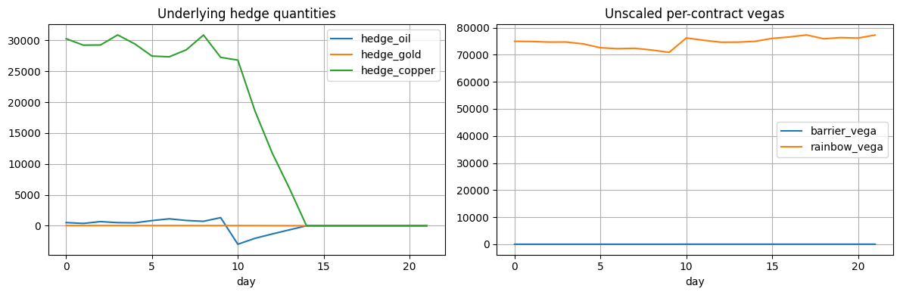

01 / MULTI-ASSET EXOTICSCOMMODITIES TRADINGMONTE CARLO
Exotic Trading Book Management
Trade and risk-manage a combined oil knock-out and three-asset best-of rainbow option book. Analyze correlated exposures, volatility shocks and a staged unwind.
Correlated GBMCross-Gamma21-day P&L